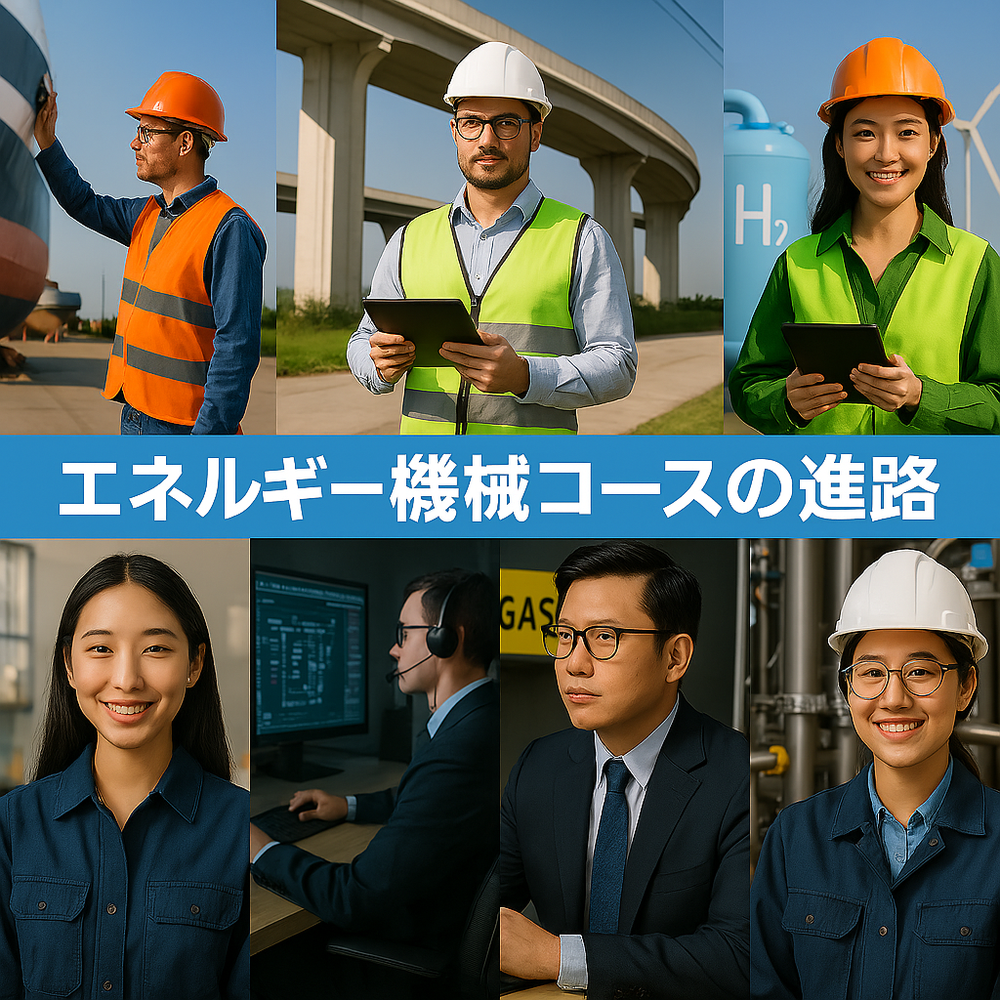

目次
1.Mコースの学び
.jpg)
設計などに必要な力は，機械工学概論、基礎製図、CAD製図、機械設計製図、機械力学、材料力学
などの講義を行うことにより，身に着けていく！
エネルギー等の貯蔵や創生などは熱力学,流れ学、エネルギー変換工学,などにより身に着けていく！
これらすべてMコースを選ぶことでしか学べない！
ここからはMコースの学びからは少しそれてしまうが，中学生の皆は気になっていると思う．
Mコースの進路について紹介していく．大きな進路はどこのコースでもそうだが，進学と就職に分かれる．
進学先だと，国公立や私立どちらも行くことができ，工学科などがやはり大きな進学先になってくる．
就職先ではパナソニックなどの会社から就職先を選べる！
などの講義を行うことにより，身に着けていく！
エネルギー等の貯蔵や創生などは熱力学,流れ学、エネルギー変換工学,などにより身に着けていく！
これらすべてMコースを選ぶことでしか学べない！
2.Mコースの学習から身につく力
輸送機械や発電所等の産業インフラの設計と運用に必要な技術を学ぶことができるとともに
水素エネルギー、水力・風力エネルギー等のクリーンエネルギーの創生と貯蔵、微生物利用
や自然再生等の環境調和技術や自然災害の予測分析,次世代の食料品,医薬化粧品の装置・製造技術等,
人のより良い暮らしと環境・エネルギーとの共生を実現するための技術が習得できる！
水素エネルギー、水力・風力エネルギー等のクリーンエネルギーの創生と貯蔵、微生物利用
や自然再生等の環境調和技術や自然災害の予測分析,次世代の食料品,医薬化粧品の装置・製造技術等,
人のより良い暮らしと環境・エネルギーとの共生を実現するための技術が習得できる！
3.Mコースの実習
Mコースではどのような実習をしているのだろうか、Mコースではエンジンの組み立てや,
CAD製図,ボール盤フライス盤を駆使した,文鎮などの作成,ちいさめの橋の強度試験など
3年からでも実践的な実習を行える！
CAD製図,ボール盤フライス盤を駆使した,文鎮などの作成,ちいさめの橋の強度試験など
3年からでも実践的な実習を行える！
4.Mコースの進路
ここからはMコースの学びからは少しそれてしまうが，中学生の皆は気になっていると思う．
Mコースの進路について紹介していく．大きな進路はどこのコースでもそうだが，進学と就職に分かれる．
進学先だと，国公立や私立どちらも行くことができ，工学科などがやはり大きな進学先になってくる．
就職先ではパナソニックなどの会社から就職先を選べる！